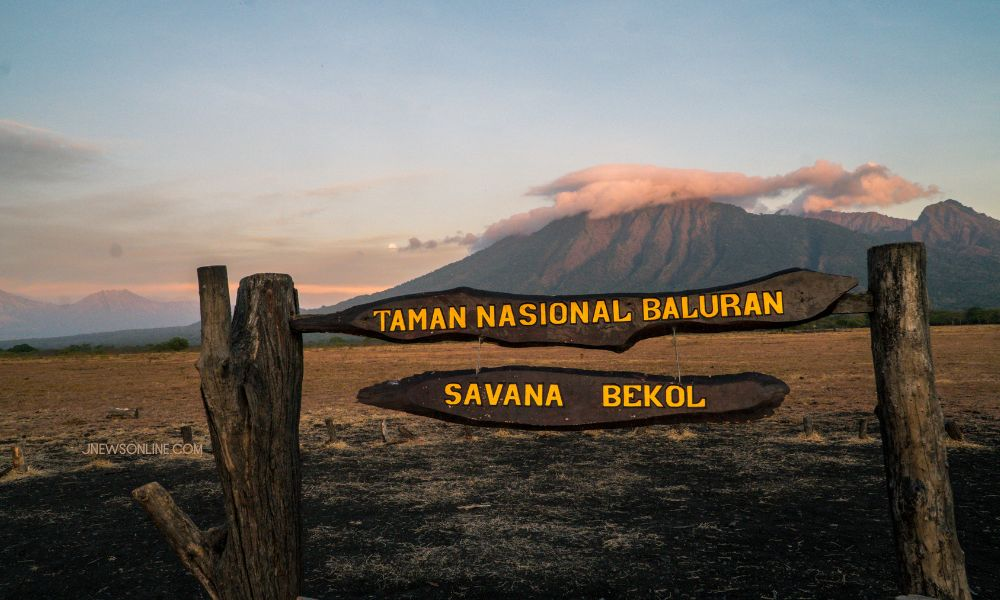

Misteri Taman Nasional Baluran dan Keindahan Savana Afrika di Jawa
Selasa, 20 November 2024
by Eling Anggie Trikunari
Taman Nasional Baluran, yang dikenal sebagai "Little Africa van Java," memikat hati banyak wisatawan dengan keindahan savana luas, satwa liar, dan nuansa alami yang eksotis. Terletak di Kabupaten Situbondo, taman ini juga menyimpan sejarah panjang serta kisah-kisah mistis yang menambah daya tariknya. Apa saja yang membuat tempat ini begitu istimewa? Mari jelajahi bersama.
Sejarah Taman Nasional Baluran
Taman Nasional Baluran resmi didirikan pada tahun 1980, namun sejarahnya dimulai jauh sebelumnya. Kawasan ini dulunya menjadi tempat perburuan pada masa kolonial Belanda sebelum akhirnya dilindungi karena keanekaragaman hayati yang unik. Nama "Baluran" diambil dari Gunung Baluran yang berdiri megah di tengah taman ini. Hingga kini, taman ini menjadi rumah bagi banteng, rusa timor, merak hijau, serta berbagai spesies flora dan fauna langka.
Kisah Mistis di Baluran
- Hutan Kramat: Beberapa area hutan di Baluran dianggap keramat oleh masyarakat lokal. Konon, suara gamelan misterius sering terdengar di tengah keheningan.
- Gunung Baluran yang Dijaga: Penduduk percaya bahwa gunung ini dihuni oleh makhluk gaib yang menjaga keseimbangan alam. Wisatawan disarankan untuk selalu menjaga sikap sopan selama berada di kawasan ini.
Daya Tarik Utama Taman Nasional Baluran
Taman Nasional Baluran menawarkan berbagai keindahan alam dan pengalaman wisata:
- Savana Bekol: Hamparan savana luas yang menyerupai padang rumput Afrika.
- Pantai Bama: Pantai yang menawan dengan hutan mangrove dan keindahan bawah laut.
- Gunung Baluran: Tempat yang ideal untuk pendakian ringan dengan panorama memukau.
Tips Berwisata ke Taman Nasional Baluran
- Waktu terbaik: Musim kemarau (April-Oktober) adalah saat yang ideal untuk berkunjung.
- Perlengkapan: Bawa kamera, air minum, dan perlengkapan anti nyamuk untuk kenyamanan.
- Etika wisata: Jangan membuang sampah sembarangan dan hormati tradisi lokal.